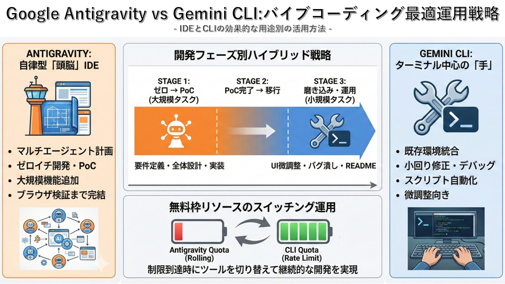

📊 インフォグラフィック概要
※ 上図は開発フェーズ別のツール使い分け戦略を視覚化したものです 
✈️ ANTIGRAVITY
自律型「頭脳」IDE
- マルチエージェント計画
複数のAIエージェントが協調して複雑なタスクを処理 - ゼロイチ開発・PoC
アイデアから動くプロトタイプまでを一気に構築 - 大規模機能追加
既存プロジェクトへの大きな機能拡張に最適 - ブラウザ検証まで完結
コード生成から動作確認までIDE内で完結
⌨️ GEMINI CLI
ターミナル中心の「手」
- 既存環境統合
現在の開発環境やワークフローにシームレスに統合 - 小回り修正・デバッグ
ピンポイントの修正や問題解決に素早く対応 - スクリプト自動化
定型作業の自動化やバッチ処理に強み - 微調整向き
細かな調整や反復的な改善作業に最適
🎯 開発フェーズ別ハイブリッド戦略
STAGE 1
ゼロ → PoC
（大規模タスク）
要件定義・全体設計・実装
ANTIGRAVITYSTAGE 2
PoC完了 → 移行
（中規模タスク）
機能拡張・リファクタリング
ANTIGRAVITYSTAGE 3
磨き込み・運用
（小規模タスク）
UI微調整・バグ潰し・README
GEMINI CLI🔋 無料枠リソースのスイッチング運用
制限到達時にツールを切り替えて継続的な開発を実現する戦略です。
Antigravity Quota
(Rolling)
制限に到達...
CLI Quota
(Rate Limit)
余裕あり！
💡 ポイント：両ツールの無料枠は別カウント。賢く切り替えて開発効率を最大化！
📖 詳細解説
🧠 IDEとCLIの本質的な違い
Antigravity（IDE型）は「考える」ツール、Gemini CLI（CLI型）は「実行する」ツールと捉えると分かりやすいです。
- IDE型：プロジェクト全体を俯瞰した意思決定
- CLI型：具体的なコマンドの素早い実行
⚡ バイブコーディングとは
AIに自然言語で指示を出し、コードを生成させる開発スタイルです。
- 従来：コードを1行ずつ書く
- バイブ：意図を伝えてAIに生成させる
- 人間は設計・レビュー・方向修正に集中
🎯 使い分けの判断基準
タスクの規模と性質で判断します。
- Antigravity向き：新規開発、大規模変更、複数ファイル編集
- Gemini CLI向き：バグ修正、小規模修正、スクリプト作成
💰 コスト最適化のコツ
無料枠を最大限活用するためのテクニック。
- 大きなタスクから着手（Antigravity）
- 制限到達後はCLIで細かい作業
- 翌日にクォータ回復後、再びIDEへ
📚 用語解説
🚀 Antigravity（アンチグラビティ）
Googleが提供するAI搭載のクラウドIDE。マルチエージェントシステムにより、複雑な開発タスクを自律的に処理できます。名前は「重力に逆らう」＝従来の開発の制約を超えるという意味が込められています。
⌨️ Gemini CLI
Googleの大規模言語モデル「Gemini」をコマンドラインから利用できるツール。ターミナルから直接AIに指示を出し、コード生成やファイル操作を行えます。
🎵 バイブコーディング（Vibe Coding）
2024年頃から広まった開発スタイル。AIに「こんな感じで」と雰囲気（Vibe）を伝えてコードを生成させる手法。厳密な仕様書よりも、対話的なやり取りで開発を進めます。
📋 PoC（Proof of Concept）
概念実証。アイデアが技術的に実現可能かを検証するための試作品やデモ。本格開発の前に作成し、フィードバックを得るために使用します。
🔄 Rolling Quota / Rate Limit
APIやサービスの利用制限方式。Rolling Quotaは一定期間内の累積使用量で制限、Rate Limitは単位時間あたりのリクエスト数で制限します。
🔄 推奨ワークフロー例
アイデア → 要件定義
Antigravityで要件を整理し、プロジェクト構造を設計。AIと対話しながら仕様を固めます。
✈️ AntigravityPoC開発・コア機能実装
主要機能のコード生成と基本的な動作確認をIDE内で完結させます。
✈️ Antigravityバグ修正・微調整
細かいバグ修正やUI調整はCLIで素早く対応。ターミナルから直接修正指示を出します。
⌨️ Gemini CLIドキュメント・仕上げ
README作成、コメント追加、コード整形などの仕上げ作業をCLIで効率的に処理。
⌨️ Gemini CLI✅ まとめ
IDE（Antigravity）とCLI（Gemini CLI）は競合ではなく補完関係にあります。
- 大きく作る時はAntigravityで俯瞰的に開発
- 細かく直す時はGemini CLIで素早く対応
- 無料枠の制限は両ツールを切り替えて回避
- 開発フェーズに応じて最適なツールを選択
🎯 両方のツールを使いこなして、バイブコーディングの生産性を最大化しましょう！